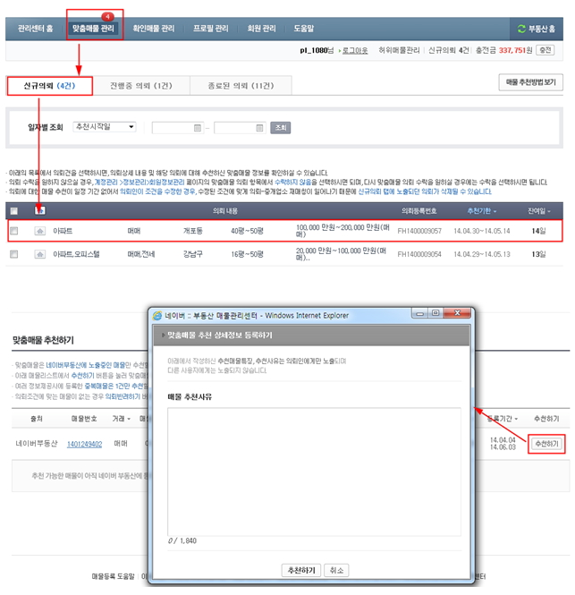

- 맞춤매물 추천 서비스
- 매수/임차인이 네이버에 운하는 매물 조건을 의뢰하면, 네이버가 해당 의뢰를 전달하여 조건에 맞는 매물을 추천받을 수 있도록 도와드리는 서비스입니다.
서비스 이용조건
네이버 프로필회원으로 가입하셔야 맟춤매물 의뢰를 받으실 수 있습니다.
서비스 이용요금
서비스 이용요금은 무료입니다.
맞춤매물 의뢰를 받기 위한 별도의 가입 비요은 없으며, 검수 받으신 ‘맞춤매물’ 의뢰에 대해
매물을 추천할때도 별도의 비용이 발생하지 않습니다.
맞춤매물 추천 방법
아래의 순서대로 매물 추천을 하실 수 있습니다.
- ① [부동산 관리센터 > 맞춤매물 관리] 페이지 접속합니다.
- ② [신규의뢰] 탭에서 의뢰 리스트 클릭합니다.
- ③ 의뢰 상세정보 페이지에서 의뢰 내용 및 추천 가능한 매물 리스트를 확인합니다.
- ④ 추천을 할 매물 리스트의 우측에 노출되는 [추천하기] 버튼을 클릭합니다.
- ⑤ 팝업에서 추천사유를 입력하시면 매물 추천 과정이 완료됩니다.
